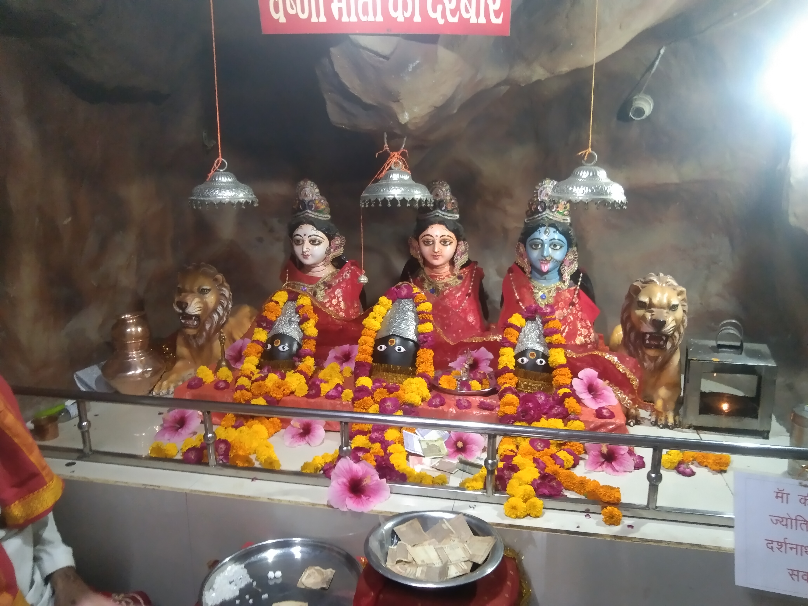
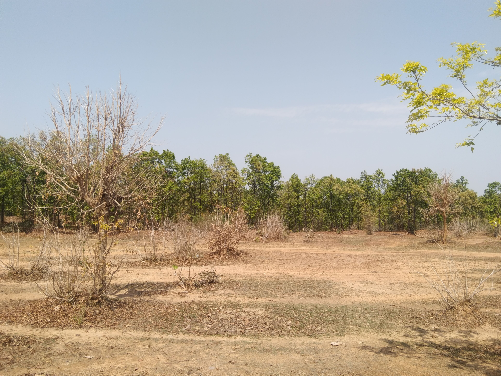

My Adventure to Choti Tumbi
I recently visited Choti Tumbi Pahad which is in Mundaria, which is about 80km away from my home town and trust me this is Scene was very beautiful from the top. Some highlights from my trip.

- Rode Bike about 10km to Reach the Top for the beautiful Scene.
- Walked 2km down from the top to Reach the waterfall which drop over 20km.
- Again Rode Bike to the Clif Hanging Point for another beautiful Spot and photography.
- Went Vanbihar for learning more about point and Area.
I found the people from Mundaria very welcoming and humble towards the travelers. The place was very clamming and peacefull and greeny will make you feel like you are in heaven and fresh air will blow your hair and make you feel fresh. You visit this place after rainy season.
Vovage to the Holy Shrine of Maa Vaishno
Maa Vaishno Devi's Temple is considered to be one of the holiest place in India as it is loacted near Katra in Jammu. Millions of people visit This temple over a year and it is secured by the Indian Army.It is also famous for devotion and There is belief that who ever comes to this place never goes empty stomach and empty hands "Mata Subki Muradein Puri Karti Hain".
- I Started My journey from the base of the Temple of the Holy bare foot along with fellow devotees. Which is about 12 Kms.
- While Walking i got know story behind the Holy cave and Maa Vaishno Devi's Temple.
- Before Reaching to the temple I cleaned my foots and hands in the lake before the temple which is also a Holy Ganga lake.
- After The Darhsan I went for another temple Visit which has belief that the one who is visiting the temple must visit Kalbhairav mandir.
This Place is full of Kind People and devotees all the time. And I found my peace of mind after having Darhsan of mata Vaishno Devi and I think that evryone should visit this place Once in a while.
Thrilling Adventure in BandhavGarh National Park
India's Most Loved Tour Destination for Tigers BandhavGarh National Park. it is one of the famous place to visit in Madhya Pradesh and It Shows us that how a conservation And awareness can safeGuared Endangered Species. it is about 32 kms from Umaria Railway station.
- Firstly I reached Umaria Railway Station and Then Took bus for BandhavGarh National Park.
- There I Hire a Safari jeep and Tour Guide to visit the Park because it is neccassary.
- After riding for two hours we get to see a real tiger drink the water from the lake.
- I got thrilled by watching a real tiger and getting goosebumps.
- There was a life threat but the thrill was teeth-chilling and Guide made Relax that No need to worry.
It is truly and addictive destination and getting bonded with it is inevitable So, place has my heart and after visiting and getting the glimpse of Tiger and Some other animal. I got goosebumps and it made think that how happily they live in This forest.